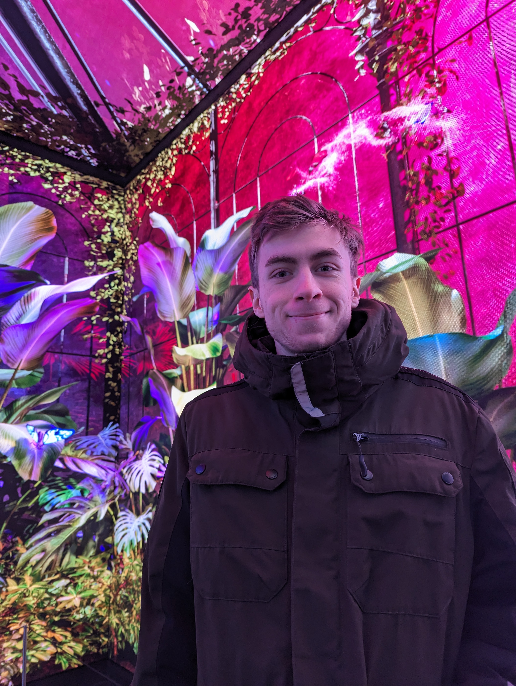

Filmuni proudly presents: „Kekse zum Frühstück" Ein studentischer experimenteller Animationsfilm mit internationaler Aufmerksamkeit
Der Animationsfilm „Kekse zum Frühstück" hat den Sprung in eine Londoner Kunstausstellung geschafft. Die Produktion zeigt, wie mutig und ausdrucksstark zeitgenössische 3D-Animation sein kann, wenn sie sich bewusst von etablierten Konventionen löst. Der Film verbindet eine sensible Erzählung mit einer ungewöhnlichen visuellen und akustischen Gestaltung, die ihn ganz klar im Bereich der experimentellen Animation verortet. Der Film ist als Bachelor-Abschlussarbeit von Adrian Himmel entstanden.
Die visuelle Sprache: Claymation im digitalen Format
Das Bildkonzept sticht besonders hervor. Die Figuren und Objekte besitzen eine Claymation-Haptik, obwohl sie vollständig digital entstanden sind. Dieser bewusst raue Look verleiht den Oberflächen eine fast greifbare Struktur, die das Gefühl von Verletzlichkeit verstärkt. Gleichzeitig arbeitet der Film mit extremen Kamerawinkeln, die oft ungewöhnliche Blickachsen und Perspektiven erzeugen. Diese visuelle Überhöhung lenkt die Wahrnehmung gezielt und trägt zum Spannungsbogen der Erzählung bei. Ergänzt wird dies durch abstrakte Audioeffekte, die sich nicht an realen Geräuschen orientieren. Stattdessen vermitteln sie emotionale Zustände, die die innere Welt der Figuren akustisch erfahrbar machen.
Der Twist
Inhaltlich setzt sich „Kekse zum Frühstück" mit dem Thema Suizid auseinander. Die Geschichte folgt der Figur Rica, die das Publikum durch zentrale Momente ihres Lebens führt. Die Erzählung legt zunächst nahe, dass Rica selbst gefährdet ist. Die Wendung am Ende zeigt jedoch, dass eine andere Person im Zentrum der Bedrohung steht. Dieser Twist zwingt das Publikum, die zuvor gesehenen Szenen neu zu interpretieren. Die visuelle Sprache – die clayartige Oberfläche, die extremen Winkel und die ungewöhnlichen Klangfragmente – gewinnt dadurch eine zusätzliche Bedeutungsebene.
Interview mit dem Regisseur

Regisseur in London
Um den kreativen Entscheidungsprozess besser zu verstehen, haben wir mit dem Regisseur über die künstlerischen Entscheidungen des Films gesprochen.
Frage: Warum haben Sie sich für eine Claymation-Haptik entschieden, obwohl der Film digital entstanden ist?
Regie: Die Textur sollte nicht perfekt sein. Die Unebenheiten, die man eigentlich aus der Stop-Motion kennt, haben wir digital nachgebildet, weil sie eine gewisse Verletzlichkeit transportieren. Die Oberfläche sollte sich menschlich anfühlen, nicht steril.
Frage: Die extremen Kamerawinkel fallen sofort auf. Was war die Idee dahinter?
Regie: Wir wollten Perspektiven zeigen, die man im Alltag nicht einnimmt. Diese Winkel erzeugen Stress, Orientierungslosigkeit oder Druck. Sie spiegeln innere Zustände wider, ohne dass wir sie erklären müssen.
Frage: Auch das Sounddesign ist sehr ungewöhnlich. Wie kam es zu den abstrakten Audioeffekten?
Regie: Geräusche können mehr als nur realistische Informationen liefern. Wir wollten Klang nutzen, um Emotionen ohne Worte zu vermitteln. Manche Sounds sind stark verfremdet, damit man sich nicht an etwas Bekanntem festhalten kann.
Frage: Der Twist am Ende verändert den gesamten Blick auf die Geschichte. War das von Anfang an geplant?
Regie: Ja, absolut. Der Film lebt davon, dass man rückblickend merkt, dass vieles anders gemeint war, als man dachte. Wir wollten eine Struktur schaffen, die das Publikum aktiv macht und nach dem Abspann noch beschäftigt.
Ein Film, der Grenzen auslotet
Kekse zum Frühstück wurde in London besonders dafür gelobt, dass die ungewöhnliche Ästhetik nicht Selbstzweck ist, sondern eng mit der Thematik verknüpft bleibt. Die Kombination aus clayartiger Optik, extremen Perspektiven und experimenteller Klanggestaltung schafft eine Atmosphäre, die tief in das psychische Erleben der Figuren führt, ohne sich auf emotionale Effekte zu verlassen.
Der Film zeigt, dass 3D-Animation weit mehr sein kann als technische Perfektion. Sie kann ein künstlerisches Werkzeug sein, das emotionale Räume öffnet und komplexe Themen neu zugänglich macht.